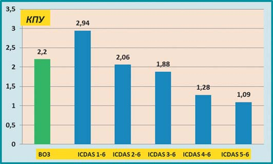

Наука · журнал «ДентАрт» 2015 №3
Систематизації карієсу зубів у практиці лікаря-стоматолога
CLACIFICATION SYSTEMS OF DENTAL CARIES IN DENTIST'S PRACTICE
Карієс як хвороба зубів відомий з давніх часів. Етіологія карієсу розкрита В.Д. Міллером/W.D Miller у 1890 році,24 незабаром з'явилася перша класифікація, розроблена Г.В. Блеком/G.V. Black, 1908 р.10 Важливо зауважити, що протягом більш ніж ста минулих років ці фундаментальні роботи залишаються «абеткою» як для наукового, так і для практичного зуболікування. З плином часу теорія карієсу Міллера лише «обростає» деталями на молекулярному рівні, а за Блеком успішно пломбує карієс зубів більшість з мільйона стоматологів у світі.16 Однак ця система не може задовольняти мінливий попит сучасних пацієнтів, особливо у зв'язку з появою нових методів і технологій у стоматології. Всесвітня організація охорони здоров'я та Міжнародна федерація стоматологів (FDI) рекомендують практикуючим лікарям-стоматологам звертати більше уваги на профілактичні заходи, а не реставрації.17 За визначенням Фішера/Fisher J., Гліка/Glick M. (2012), ідеальна класифікація має відповідати таким критеріям:
- застосовуватися у клінічній практиці;
- використовуватися в епідеміологічних дослідженнях міжнародного значення;
- визнаватися національними стоматологічними асоціаціями і, відповідно, рекомендуватися професіоналам країн;
- включати елементи, що орієнтують на профілактику хвороби.
Згідно з рекомендаціями Міжнародної федерації стоматологів (FDI-2013), лікувально-профілактичні заходи при карієсі зубів повинні базуватися на сучасних знаннях його етіології, патогенезу та особливостей клінічних проявів хвороби. Класифікація карієсу Блека базується на п'яти стандартних дизайнах пломбування порожнини, без урахування стадії, розміру і активності ураження. Кожна нова або удосконалена класифікація має враховувати локалізацію, стадію, активність і розмір ураження як для первинного, так і для вторинного карієсу, пов'язаного з реставраціями або силантами для тимчасових і постійних зубів, а також враховувати можливий вплив нелікованого карієсу на загальний стан пацієнта. Нова класифікація повинна бути основою для комунікації та освіти пацієнтів, медиків і влади про карієс, його профілактику й лікування.17
У зв'язку з цим справедливе твердження Є.В. Боровського, що «нерідко використовуються такі визначення і класифікації, які важко зрозуміти».3
У цій роботі будуть проаналізовані системи класифікацій карієсу зубів, або, як нині часто пишуть у міжнародній стоматологічній літературі, системи визначення та оцінки карієсу — з метою орієнтації лікарів-стоматологів, молодих учених і студентів у потоці інформації з цієї проблеми та обґрунтування правильного вибору методів для практичної роботи або наукових досліджень у галузі карієсології.
Класифікація карієсу по Блеку використовувалася стоматологами в клініці. Коли постало питання, яка поширеність та інтенсивність цієї хвороби серед населення, американські вчені Клейн, Пальмер, Кнутсон у 1938 р.22 розробили індекс КПВ: сумарна кількість каріозних, пломбованих і видалених зубів. Індекси КПВ для постійних і кпв для тимчасових зубів широко застосовуються у наукових дослідженнях описової та аналітичної епідеміології в стоматології. 1971 року Всесвітня організація охорони здоров'я рекомендувала індекс КПВ як універсальний критерій для визначення інтенсивності карієсу зубів у всіх вікових групах населення.27 Ця рекомендація ВООЗ збереглася донині (ВООЗ, 2013).
Велику роль у систематизації різних клінічних форм каріозної хвороби зіграла «Міжнародна класифікація хвороб зубів», третій перегляд — ICD-DA, WHO, 1995 в оригіналі18 і в перекладі: МКБ-10С, 1997. У табл. 1 подано оригінал, переклад в МКБ-10С і нашу адаптацію перекладу.
Серед окремих діагнозів каріозної хвороби, що містяться в таблиці 1, можна спостерігати не лише невідповідність перекладу низки термінів, але й проблему їх інтерпретації. Це ускладнює широке використання цієї класифікації і нерідко призводить до помилкової діагностики карієсу. Наприклад, «карієс емалі» — К02.0 багато лікарів-стоматологів розуміють як руйнування в межах емалі (поверхневий карієс), а не тільки зміну її кольору. Не дуже зрозуміло, у яких клінічних випадках уражень коренів зубів можна ставити діагноз «карієс цементу» — К02.2. На практиці фактично не використовуються діагнози, кодовані К02.3, 4, 8, 9.
Як писав відомий класик карієсології проф. Є.В. Боровський, «класифікація має бути науково-обґрунтованою, відносно простою, зручною у використанні і допомагати у виборі методів лікування».3
| ICD-DA, WHO, 1995 | МКБ-10С, 1997 | Адаптація перекладу |
|---|---|---|
| K02 Dental caries | Карієс зубів | Карієс зуба |
| K02.0 Caries limited to enamel White spot lesion (initial caries) | Карієс емалі Стадія «білої (крейдоподібної) плями» (початковий карієс) | Карієс в межах емалі Ураження у вигляді білої плями (початковий карієс) |
| K02.1 Caries extending into dentine | Карієс дентину | Карієс, що поширюється в дентин |
| K02.2 Caries of cementum | Карієс цементу | Карієс цементу |
| K02.3 Arrested caries | Призупинений карієс зубів | Призупинений карієс |
| K02.4 Odontoclasia Infantile melanodontia Melanodontoclasia Excludes: internal and external resorption of teeth (K03.3) | Одонтоклазія Дитяча меланодонтія Меланодонтоклазія Виключена: внутрішня і зовнішня патологічна резорбція зубів (К03.3) | Одонтоклазія Дитяча меланодонтія Меланодонтоклазія Виключає: внутрішню і зовнішню резорбцію зубів (К03.3) |
| K02.8 Other specified dental caries | Інший уточнений карієс зубів | Інша уточнена форма карієсу зуба |
| K02.9 Dental caries, unspecified | Карієс зубів неуточнений | Невизначений карієс зуба |
Діагностика карієсу. Високопрофесійно і досить докладно алгоритм діагностики карієсу описано у монографії Феєрскова/O. Fejerskov і Кідда/E. Kidd, 2004. При виявленні початкового карієсу на зубі стоматолог передусім повинен визначити протяжність ураження та його активність — це необхідне для ухвалення рішення про тактику лікування. Візуально, за допомогою періодонтального зонда, визначається наявність каріозного руйнування емалі і можливе його поширення в дентин. Якщо на поверхні каріозного ураження є зубний наліт і/або при обережному зондуванні визначається м'який дентин, це є ознаками того, що активний каріозний процес прогресує. Якщо поверхня емалі інтактна, слід визначити її колір: матовий, крейдяний чи блискучий. Матовий і крейдяний кольори емалі під м'яким зубним нальотом вказують на активне ураження, прогресуванню якого можна запобігти або вилікувати його консервативними методами. Блискуча поверхня емалі зуба у місці крейдяної плями може засвідчувати, що карієс призупинився. На уявній інтактній поверхні емалі, покритої зубним нальотом, може бути активне ураження карієсом. За кольором емалі можна отримати багато інформації про характер каріозного ураження, але остаточні висновки повинні бути обережними. Так, коричневий колір плями і блискуча поверхня емалі свідчать про зупинення процесу, але ураження може знову стати активним — у випадках, якщо на якій-небудь його частині виявляється невелике розм'якшення.
Нерідко важливе діагностичне значення може мати розташування каріозного ураження щодо ясенного краю. Каріозні плями на гладенькій поверхні зуба, вільній від ясен, зазвичай є старими осередками призупиненої демінералізації.
Як уже згадувалося вище, ідеальної класифікації карієсу зубів нині не існує. На додаток до рекомендацій FDI щодо нових класифікацій Феєрсков і Кідд, 2004, визначили вісім принципів побудови класифікації карієсу (таблиця 2).
| Основа | Критерії |
|---|---|
| 1. Лікування карієсу | КПВ: К — каріозна порожнина П — запломбована каріозна порожнина В — видалений зуб |
| 2. Морфологія (локалізація карієсу) | Оклюзійна поверхня зуба Гладенька поверхня зуба Карієс поверхні кореня |
| 3. Попередній стан зуба | Первинний карієс Вторинний карієс |
| 4. Тяжкість і швидкість прогресування карієсу | Гострий Хронічний Активний Призупинений |
| 5. Протяжність ураження | Початковий Просунутий |
| 6. Вікова хронологія | Карієс у ранньому дитинстві Підлітковий Дорослих Літніх |
| 7. Етіологія | Дитячий пляшковий карієс |
| 8. Ураження тканини | Емаль Дентин Цемент |
Згідно із загальноприйнятою думкою фахівців із карієсології, жодна з відомих класифікацій карієсу зубів повністю не відповідає перерахованим вище принципам, але найпопулярнішою є система визначення карієсу зубів і його ускладнень, рекомендована Всесвітньою організацією охорони здоров'я (WHO-2013). Система ВООЗ використовується при масових (епідеміологічних) дослідженнях населення, дітей і дорослих. Остання її модифікація описана у 5-му виданні «Основних методів стоматологічних досліджень» — Oral Health Surveys Basic Methods, Fifth Edition, World Health Organization, 2013.27
За методикою ВООЗ, огляд порожнини рота з метою діагностики карієсу зубів проводиться за допомогою плоского зубного дзеркала і періодонтального зонда ВООЗ (CPI Probe) з кулькою на кінчику діаметром 0,5 мм. Не рекомендується використання фіброоптики і рентгенографії для визначення карієсу на проксимальних поверхнях зубів, оскільки ці методи непрактичні в «польових умовах» при масових дослідженнях, і невеликі переваги додаткових засобів діагностики карієсу повинні бути зважені проти ризику багаторазових опромінень пацієнтів. Дослідникові рекомендується дотримуватися певної системи черговості огляду зубів, наприклад, від 18 до 28 і від 38 до зуба 48; досліджувати жувальну поверхню, потім язичну, щічну, дистальну і медіальну. Стандартизація огляду зручна не тільки лікареві, але й реєстраторові, який заповнює карту стоматологічного статусу, для мінімізації помилок. Зуб вважається таким, що прорізався, якщо видима будь-яка його частина. Якщо в місті, призначеному для одного зуба, є тимчасовий і постійний, який частково прорізався, оцінюється стан останнього. У карті для реєстрації стоматологічного статусу коронки і корені постійних зубів кодуються цифрами, тимчасові зуби — прописними латинськими літерами. У таблиці 3 підсумовані всі можливі (за ВООЗ) стани коронки зуба, коди для їх реєстрації та дано короткий опис кожного стану.
| Стан коронки зуба | Коди для реєстрації | Короткий опис стану коронки зуба | |
|---|---|---|---|
| Тимчасовий зуб | Постійний зуб | ||
| Здорова | А | 0 | Коронка зуба вважається здоровою, якщо на ній немає видимої каріозної порожнини або пломби. Стадії початкового карієсу, що передують утворенню каріозної порожнини, не враховуються. |
| Карієс | В | 1 | Карієс реєструється, якщо в ямці, у фісурах або на гладенькій поверхні є очевидна каріозна порожнина, підрита емаль або розм'якшення дна чи стінок. До цієї категорії також належать зуби з тимчасовими пломбами і зуби з карієсом і силантами, а також зуби з коронкою, зруйнованою до кореня. |
| Карієс + пломба | С | 2 | На коронці постійного або тимчасового зуба є пломба, накладена з приводу карієсу, а також одне або більше каріозних уражень коронки, прилеглих до пломби (за типом вторинного карієсу) або окремих. |
| Пломба | D | 3 | Коронка зуба вважається запломбованою, якщо на ній є одна або більше постійних пломб, а на решті частини коронки немає каріозних уражень. У цю категорію також входять зуби, на які була поставлена штучна коронка з приводу карієсу. |
| Зуб, видалений через карієс | E | 4 | Ця категорія для тимчасових і постійних зубів у випадках їх видалення з причини карієсу або його ускладнень. Для тимчасових зубів код використовується у віці, коли відсутність зуба не можна пояснити його фізіологічним випаданням (ексфоліацією). |
| Зуб, видалений з інших причин | — | 5 | Оцінюються постійні зуби. До цієї категорії належать вроджена відсутність зубів, зуби, видалені за ортодонтичними показаннями, внаслідок травми, хвороб періодонту і т.п. У випадках повної відсутності зубів у зубній дузі між кодами 5 можна провести суцільну лінію. |
| Фісурний силант | F | 6 | Код використовується, якщо на коронці зуба в природних або розширених бором фісурах на оклюзійній поверхні або в ямках накладені силанти або композитні матеріали. Якщо на зубі, покритому силантом, є карієс, стан реєструється як «карієс коронки зуба» (коди В, 1). |
| Опорна коронка протеза, імплантат | G | 7 | Код вказує, що коронка зуба є опорною частиною протеза. Також використовується при покритті зуба штучною коронкою не через карієс і у випадках вінірів або ламінатів. Відсутні зуби під мостовидним протезом реєструються кодами 4 або 5. |
| Зуб, що не прорізався | — | 8 | Використовується у випадках, коли є простір для зуба, що не прорізався, а тимчасовий зуб відсутній. |
| Неврахований зуб | — | 9 | Код використовується, якщо коронку неможливо дослідити, наприклад під ортодонтичною дугою, при гіпоплазії тяжкого ступеня та ін. |
Визначення індексів інтенсивності карієсу: зубів (КПВ, кпв) і поверхонь зубів (КПВ поверхонь, кпв поверхонь). Інформацію для обчислення індексу КПВ — каріозні, пломбовані і видалені зуби — можна отримати безпосередньо за даними відповідних кодів у заповнених клітинках зубної формули. Компонент «К» включає всі зуби, кодовані цифрами 1 і 2. Компонент «П» включає лише код 3. Компонент «В» включає зуби, кодовані цифрою 4, у дітей і молодих людей віком до 30 років і зуби, кодовані цифрами 4 і 5, у дорослих віком 30 років і старших. Для обчислення кількості видалених зубів підсумовуються зуби, видалені через карієс і будь-які інші причини. Індекс КПВ визначається з розрахунку 32 зубів, тобто всіх постійних зубів, включаючи зуби мудрості. Зуби, кодовані цифрами 6 (фісурні силанти) або 7 (фіксований зубний протез, опора мостоподібного протеза, штучна коронка, вінір, імплантат) не включаються в індекс КПВ. Обчислення індексу кпу для тимчасових зубів проводиться точно так само, тобто інформація береться за даними кодів A, B, C, D, E, F, G із заповненої зубної формули. У випадках, коли епідеміологічне дослідження проводиться з якоюсь специфічною метою, наприклад для оцінки ефективності програми профілактики карієсу зубів, дослідник може додатково визначити індекси КПВ поверхонь постійних зубів, кпв поверхонь тимчасових зубів. При дослідженні літніх людей на додаток до індексу КПВ можна визначити індекс КП коренів зубів на основі інформації заповненої зубної формули в карті стоматологічного статусу.
Істотним недоліком системи визначення карієсу зубів за ВООЗ є виключення початкових форм карієсу емалі, які можуть бути вилікувані або припинені консервативними методами. У зв'язку з цим 2004 року було створено Міжнародну систему визначення карієсу зубів — International caries detection and assessment system (ICDAS). Нова система спрямована на усунення недоліків попередніх класифікацій шляхом використання їх кращих елементів для отримання можливості стандартизації методів виявлення карієсу зубів. У системі кілька класифікацій карієсу інтегровані в одну універсальну систему, де використовується 6-значна шкала для позначення уражень від початкових проявів до екстенсивних каріозних порожнин і таким чином визначається стадія патологічного процесу, а також оцінюється його активність за додатковою двозначною шкалою (Пітс Н./Pitts N., 2004). Нижче подано короткий опис системи ICDAS.
Міжнародна система визначення карієсу зубів — International caries detection and assessment system (ICDAS)
Зуби очищають і висушують протягом 5 секунд. Оглядають поверхні коронок усіх зубів, дотримуючись такої послідовності: оклюзійна, мезіальна, дистальна, щічна, язична поверхні зуба. Стан реєструють, використовуючи такі коди:
Код 0 — здорова поверхня зуба. Видимих патологічних змін емалі на поверхні коронки зуба не виявлено. Виключаються: гіпоплазія емалі, флюороз, стирання, ерозія, забарвлювання зовнішнє і внутрішнє.
Код 1 — перші видимі зміни емалі. Початкові візуальні зміни емалі у вигляді білих (опалових) плям, які виявляються чіткіше після висушування повітрям. В ямках і фісурах темне забарвлення може бути видно і на вологому зубі. Виключається: темне забарвлення в ямках і фісурах від чаю або кави. У цих випадках забарвлювання буде симетричне на багатьох зубах.
Код 2 — чіткі видимі зміни емалі. На поверхні емалі визначаються білі або коричневі каріозні плями, які може бути видно і без висушування. Плями поширюються за межі фісури. Після висушування можна бачити частково зруйновану емаль (у таких випадках стан реєструється кодом 3).
Код 3 — локалізоване руйнування емалі, дентину не видно. На вологій поверхні зуба визначається пляма білого або коричневого кольору, при висушуванні якої чітко видно часткове руйнування емалі. Дентину не видно. Наявність руйнування емалі підтверджується обережним зондуванням тупим зондом або періодонтальним зондом з кулькою на кінчику діаметром 0,5 мм. Фісура розширена. Цим кодом також реєструється щілина, менша 0,5 мм, між пломбою і каріозною плямою.
Код 4 — руйнування емалі до дентину без утворення порожнини в дентині. Емаль зруйнована або здається цілою, але під нею видно дентин сірого, блакитного або коричневого кольору. Поверхня зуба демінералізована. Карієс реєструється на поверхні, звідки він походить. Якщо на оклюзійній поверхні видно тінь проксимального карієсу, то вона не вважається ураженою. Виключається: зміна кольору емалі поряд з амальгамовою пломбою.
Код 5 — видима чітка каріозна порожнина в дентині. Під опаловою або забарвленою емаллю уражений дентин. Каріозна порожнина поширюється менш ніж на половину поверхні і неглибока, що умовно виключає залучення пульпи. До цієї категорії також належить вторинний карієс, коли між пломбою і емаллю є щілина шириною понад 0,5 мм і видно уражений дентин.
Код 6 — чітко видно значну каріозну порожнину в дентині. Визначається екстенсивне каріозне ураження, яке охоплює половину коронки і більше, з видимим ураженням дентину або пульпи. Каріозна порожнина глибока і/або широка. До цієї категорії належать також зуби, зруйновані карієсом до коренів.
Для наочної ілюстрації етапів практичного визначення карієсу за системою ICDAS на рис. 1 наводимо адаптований нами варіант опису цього методу в EGOHID (Європейській глобальній програмі розробки індикаторів стоматологічного здоров'я).14

Рисунок 1. Алгоритм діагностики карієсу за ICDAS, коди: 0-6 (адаптовано за EGOHID-II Bourgeois D. і співавт., 2008, www.egohid.eu).
Як уже було зазначено, система ICDAS дозволяє визначати карієс від початкових стадій до екстенсивного ураження, проте в цій системі, так само як і в інших існуючих методах діагностики, є недоліки, які полягають у тому, що коли карієс є, то багато помилкових негативних діагнозів, а якщо карієсу немає, то багато помилкових позитивних діагнозів. У нечисленних дослідженнях ICDAS продемонструвала добру відтворюваність при внутрішньому і зовнішньому калібруванні і достовірність при клінічних дослідженнях.20, 21 У роботі Нельсон С./Nelson S. і співавт. (2011) апробація методу здійснювалася на видалених зубах і фотознімках, а потім на дітях у віці 8-16 років (35 осіб). Для видалення зубного нальоту зуби чистили зубною щіткою з водою, міжзубні проміжки — флосом, потім зуби висушували серветкою і обкладали ватними кульками для ізоляції від слини. Стандартний візуальний огляд починався з правого верхнього дистального зуба за годинниковою стрілкою з подальшим переходом на нижню щелепу, закінчуючись оглядом дистального зуба ліворуч. Після огляду вологих зубів їх висушували повітрям 5 секунд і продовжували огляд. Кожен дослідник оглянув 7140 поверхонь зубів. Ураження, кодовані 3+ по ICDAS, і пломби визначені у 72% обстежених за умови гарного калібрування: критерій Каппа був 0.8-0.9, тобто хороший і відмінний. Навчання та калібрування дослідників у цьому проекті тривали 4 робочих дні, що засвідчує обов'язковість цього етапу перед проведенням епідеміологічних досліджень. Одну дитину оглядали чотири екзаменатори протягом 45-60 хвилин, тому проводити калібрування на маленьких дітях не рекомендується. Епідеміологи повинні постійно використовувати систему ICDAS у себе в клініці, щоб набути стійкого досвіду. Також необхідне повторне навчання та калібрування через рік. Найбільш проблематичним для дослідників було визначення активності каріозного ураження.
Основною проблемою у використанні системи ICDAS в епідеміологічних дослідженнях є складність порівняння даних, отриманих раніше, оскільки дотепер всі дослідження проводилися за методикою ВООЗ.19 Це ускладнює вивчення тенденцій каріозної хвороби. У зв'язку з цим тривають дискусії про включення коду «3» (локалізоване руйнування емалі, що не поширюється до дентину) або коду «4» (руйнування емалі до дентину без утворення в ньому порожнини) за системою ICDAS для можливого порівняння з КПВ за ВООЗ.
Для ілюстрації значущості цієї проблеми подаємо дані епідеміологічного дослідження, проведеного в Іспанії.19 За результатами калібрування дослідників за методом ICDAS критерій Каппа варіював від 0.56 до 0.89, тоді як за індексом КПВ ВООЗ він був 0.91, тобто спостерігалися труднощі у відтворюваності ICDAS. Відмінності у поширеності та інтенсивності карієсу зубів за результатами досліджень у цьому проекті одних і тих самих дітей подано в табл. 4. Походження розбіжностей в оцінці інтенсивності карієсу зубів у дітей за системами ВООЗ та ICDAS чітко простежується при аналізі структури КПУ ICDAS шляхом послідовного виключення кодів 4, 3, 2, 1 (рис. 2).
| Вікові групи | n | Поширеність карієсу (%) | Інтенсивність карієсу (середній КПВ зубів) | ||
|---|---|---|---|---|---|
| ICDAS | ВООЗ | ICDAS | ВООЗ | ||
| 5-6 років | 9 | 66 | 59 | 1.59*-1.62** | 1.45 |
| 12 років | 32 | 75 | 66 | 2.06*-2.94** | 2.22 |
| 15 років | 40 | 93 | 75 | 3.73*-4.70** | 2.40 |
* ICDAS, виключено коди 1-2; ** ICDAS, виключено коди 1-3.

Рисунок 2. Структура КПВ зубів 12-річних дітей за системою ICDAS у порівнянні з критеріями ВООЗ (діаграму побудував автор статті за даними Іранцо-Кортеса Дж.Е. і співавт., 2013) (пояснення у тексті).
При середньому КПВ зубів 12-річних дітей за ВООЗ 2.2, КПВ за сумою кодів «5» і «6» ICDAS, тобто «Карієс дентину», удвічі нижче — 1.09. Включення в КПВ ICDAS кодів «4», «3» і «2» (значення КПВ 1.28, 1.88 і 2.06 відповідно) наближає його значення до рівня КПВ ВООЗ (2.2); сума всіх кодів (1-6) КПВ ICDAS (2.94) «зашкалює» на 1/3 у порівнянні з КПВ ВООЗ. Таким чином, порівняння даних КПВ за ICDAS і ВООЗ умовно можливе при виключенні кодів «1» і «2», що і практикується в більшості сучасних наукових публікацій з епідеміології карієсу.
Закінчення статті — класифікації Базіяна-Новгородцева, Виноградової, SiC-index Бреттхолла, порівняльна таблиця найпопулярніших систематизацій і висновки — читайте у продовженні: «Систематизації карієсу зубів у практиці лікаря-стоматолога», журнал «ДентАрт» №4/2015.